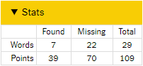
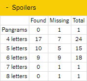
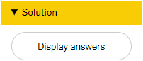

Installation
Drag and drop this bookmarklet into the bookmark menu: Spelling Bee Assistant. If you already have an older version of the bookmark you should delete it first.
What does this thing do?
When you click on the bookmarklet it adds three new panels to the game.
Stats
The first panel shows some statistics but contains no spoilers. The table will be updated as you progress in the game.
Spoilers
The second panel is similar to the first one but it gives away information that you probably don’t want to know early on.
Solution
The third panel hides a button that - upon confirmation - will solve the game with a few mouse clicks. However, it won't make you Queen Bee 😞. All the words you didn't find yourself will be linked to the respective terms in Google. Maybe this will help you next time!